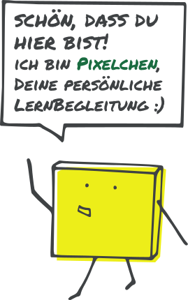
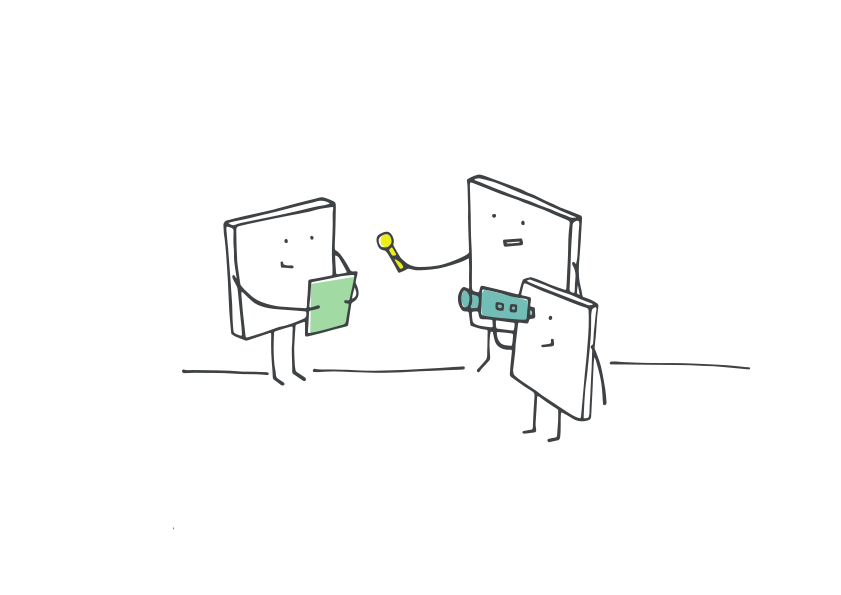
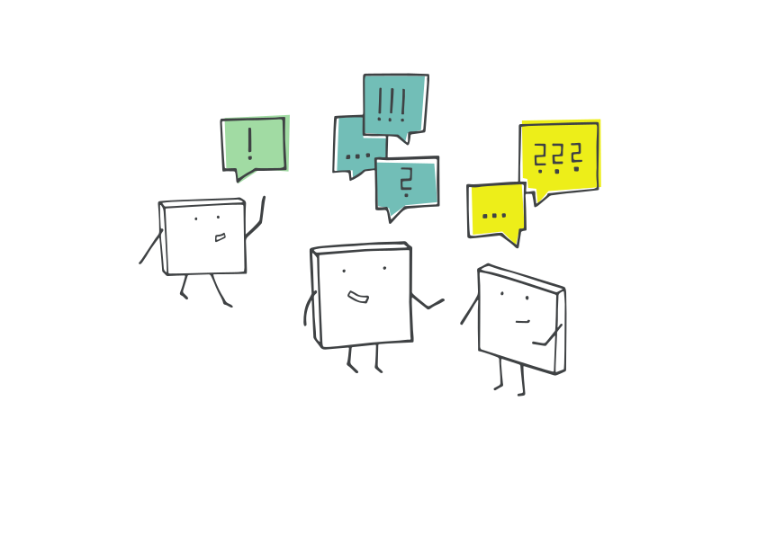
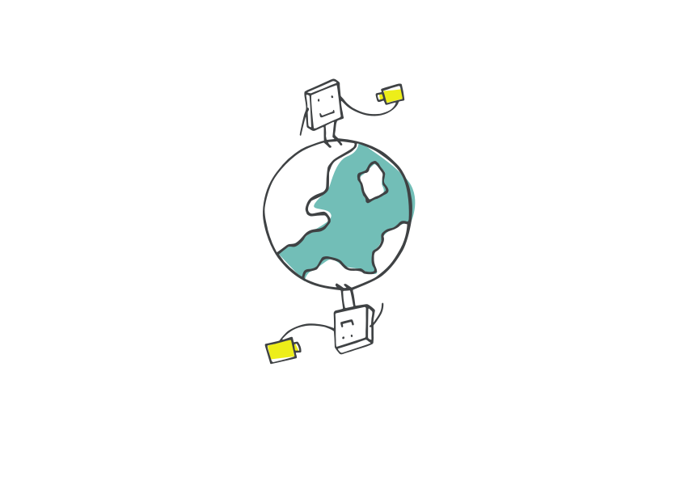
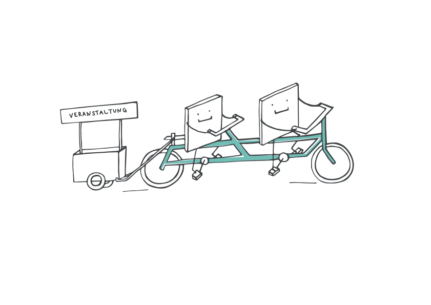
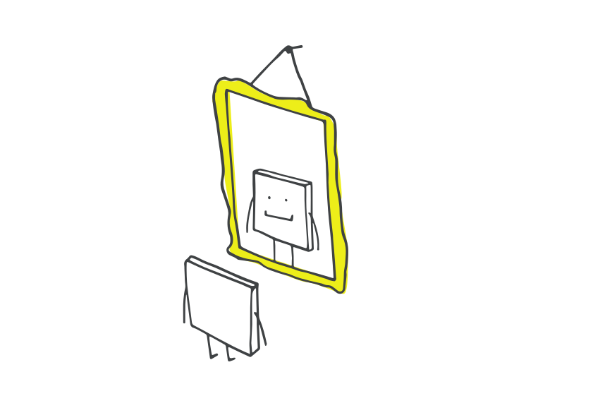
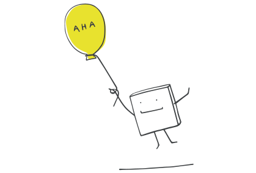
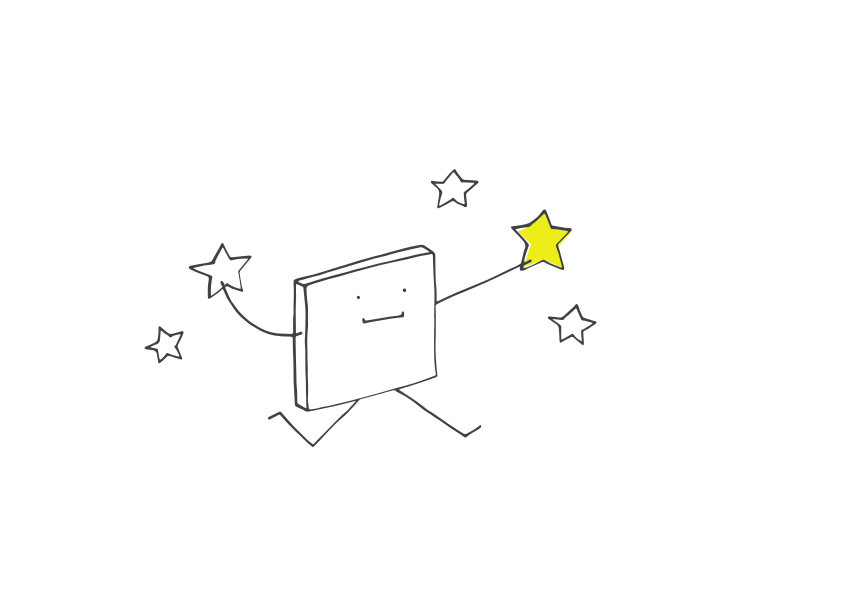

Team-Tag · Workshop-Booklet
Dein Kita-Team
auf dem KITA HUB
Vier Workflows. Ein Tag. Ergebnisse, die ab Montag funktionieren.
Inhalt
- 01Willkommen & Tagesziele3
- 02Tagesablauf4
- 03Block 1 — Begrüßung & Erwartungen5
- 04Block 2 — Die Dienste des KITA HUB6
- 05Block 3 — Dienstepass7
- 06Block 4 — Mein Workflow-Anker8
- 07Workflow 1 — Fachwissen ins Team bringen9
- 08Workflow 2 — Teamsitzung digital vorbereiten12
- 09Workflow 3 — Elternabend hybrid organisieren15
- 10Workflow 4 — Neue Kolleg:in einarbeiten18
- 11Block 5 — Auswertungsrunde21
- 12Block 6 — Transfer „Ab Montag”22
- AAnhang — QR-Codes & Schnellreferenz24
So nutzen Sie dieses Booklet: Hier finden Sie Inhalte, Aufgaben und Schreibplatz für den ganzen Tag. Notieren Sie Ihre Kurzlinks, Kanal-Namen und Erkenntnisse direkt auf den Linien — am Ende des Tages haben Sie alles an einem Ort.
01 · Willkommen

Willkommen & Tagesziele
Dieser Tag dreht sich um echte Workflows aus Ihrem Kita-Alltag — und um die digitalen Werkzeuge des KITA HUB Bayern, die diese Workflows unterstützen. Ziel ist nicht, möglichst viele Tools zu zeigen, sondern dass Sie ab Montag mit konkreten Lösungen arbeiten können.
Leitfrage für den Tag: Was bringen mir die Dienste — und wie nutze ich das für mich und meine Einrichtung konkret?
Am Ende des Tages können Sie …
- erkennen, was jeder Dienst konkret für Sie und Ihre Einrichtung leisten kann
- die zentralen Dienste des KITA HUB sicher bedienen (Chat, Meeting, Termine, Kurzlink, Notizen, Medienecke, Kurse)
- vier konkrete Workflows aus dem Kita-Alltag digital umsetzen
- echte Artefakte mitnehmen: Kurzlinks, QR-Codes, Notizen, Termine, Meeting-Räume
- einschätzen, welche Workflows in Ihrer Einrichtung als Erstes Sinn ergeben
- einen ersten Pilot-Schritt für die nächsten 14 Tage benennen
Worum es heute nicht geht
- Tool-Show: Wir starten immer mit der Aufgabe, nie mit dem Dienst.
- Vollständigkeit: Sie müssen heute nicht alles einmal angefasst haben.
- Fehlerfrei: Stolpersteine sind willkommen — sie zeigen, wo wir nachbessern.
Meine Erwartung an heute
Was möchte ich heute mitnehmen? Welches Problem aus meinem Kita-Alltag soll heute eine Lösung bekommen?
02 · Tagesablauf
Der Tag im Überblick
Haken Sie ab, was hinter Ihnen liegt — so behalten Sie Ihren eigenen Rhythmus im Blick.
| ✓ |
Zeit |
Block |
Inhalt |
| 09:30 – 09:45 | 1 | Ankommen & Erwartungsabfrage |
| 09:45 – 10:30 | 2 | KITA HUB: Alle Dienste kennenlernen (Demo) |
| 10:30 – 10:55 | 3 | Dienstepass — Kernhandlungen ausprobieren |
| 10:55 – 11:10 | — | ☕ Kaffeepause |
| 11:10 – 11:20 | 4 | Einführung: Gruppen & Alltagsanker |
| 11:20 – 12:05 | WS I | Workflow-Werkstatt I — WF 1 & WF 2 (geführt) |
| 12:05 – 13:05 | — | 🍽 Mittagspause |
| 13:05 – 14:05 | WS II | Workflow-Werkstatt II — WF 3 & WF 4 (eigenständig) |
| 14:05 – 14:20 | 5 | Auswertungsrunde & Querverbindungen |
| 14:20 – 14:35 | — | ☕ Kaffeepause |
| 14:35 – 15:05 | 6 | Transfer „Ab Montag” + Team-Commitment |
Pausenzeiten sind heilig. Bei Fragen, die nicht zwischen Tür und Angel passen: notieren — wir nehmen sie im Plenum oder in den Pausen auf.
03 · Block 1
Begrüßung & Erwartungen
09:30 – 09:45 · 15 Minuten · Plenum
Worum geht's?
Sie kommen an, lernen einander kurz kennen und benennen, was Sie heute erleben wollen. Anschließend richten wir gemeinsam den Tag aus: „Am Ende des Tages haben Sie vier Workflows mit echten Links, QR-Codes und Artefakten — sofort einsetzbar ab Montag.“
Übung — Mein Team-Steckbrief
Notieren Sie kurz, womit Ihr Team digital schon arbeitet:
Welche digitalen Tools nutzt unser Team heute schon?
Was funktioniert gut?
Wo hakt es?
Meine drei Erwartungen an heute
04 · Block 2
Die Dienste des KITA HUB
09:45 – 10:30 · 45 Minuten · Vortrag + Live-Demo
Prinzip: Einmal anmelden auf kita.bayern/webapp — alle Dienste nutzen (eine einheitliche Anmeldung für alle Dienste). Während der Demo notieren Sie pro Dienst, wo dieser in Ihrer Kita Sinn macht.
Chat
chat.kita.bayern
Teamkommunikation in Kanälen & Direktnachrichten.
Account: ja
passt bei uns für …
Meeting
meeting.kita.bayern
Videokonferenzen (BigBlueButton). Eltern/Externe per Link.
Erstellen: ja · Beitreten: nein
passt bei uns für …
Termine
termine.kita.bayern
Terminumfragen & Abstimmungen, auch für Eltern.
Account: nein
passt bei uns für …
Kurzlink
link.kita.bayern
Links kürzen + QR-Codes erstellen.
Verwalten: ja · Kürzen: nein
passt bei uns für …
Notizen
notizen.kita.bayern
Gemeinsame Dokumente & Protokolle.
Speichern: ja · Gast: nein
passt bei uns für …
Medienecke
mediensuche.kita.bayern
Geprüfte OER-Materialien finden & teilen.
Account: nein
passt bei uns für …
Kurse
kurse.kita.bayern
Online-Fortbildungen, teils ohne Registrierung.
Teils ohne Account
passt bei uns für …
Lesezeichen
— im Dashboard —
Persönliche Link-Sammlung im KITA HUB.
Account: ja
passt bei uns für …
Stolpersteine: Notiz-Link sofort kopieren & sichern · Kurzlink ohne Account = nicht nachbearbeitbar · Meeting-Browser: Chrome oder Firefox.
05 · Block 3
Dienstepass — Kernhandlungen ausprobieren
10:30 – 10:55 · 25 Minuten · Einzelarbeit · Ziel: 5 von 6 Aufgaben
Sechs kleine Aufgaben, eine pro Dienst. Sie sammeln dabei echte Links und einen QR-Code, die Sie später in den Workflows wieder einsetzen können. Notieren Sie alles in den Linien — auch wenn der Link lang ist.
1 · Medieneckemediensuche.kita.bayern
Material zum eigenen Kita-Thema suchen → Link kopieren.
mein Link
2 · Kurzlink & QR-Codelink.kita.bayern
Den Medienecke-Link kürzen → QR-Code als PNG herunterladen.
mein Kurzlink
3 · Terminetermine.kita.bayern
Mini-Terminabfrage mit drei Optionen erstellen → Link teilen.
mein Terminlink
4 · Notizennotizen.kita.bayern
Gastnotiz anlegen → Link einfügen und sofort sichern.
mein Notiz-Link
5 · Meetingmeeting.kita.bayern
Per Test-Link einem Meeting beitreten → Audio & Chat kurz testen.
Browser: Chrome oder Firefox
6 · Chat nur mit Accountchat.kita.bayern
Kanal finden oder beitreten → eine Nachricht senden.
Kanal-Name
06 · Block 4
Mein Workflow-Anker
11:10 – 11:20 · 10 Minuten · Team-Bildung
Bevor wir in die Workflow-Labs gehen: Welcher der vier Workflows passt zu einer echten Situation, die Sie kürzlich erlebt haben? Diese Verortung macht das Lab sofort konkret — aus „theoretisch hilfreich“ wird „genau das brauche ich Montag“.
Welche Situation der letzten Wochen wäre einfacher gewesen?
WF 1 — Fachwissen ins Team
Eine Fachkraft entdeckt Material und will es teilen & besprechen.
Meine Situation:
WF 2 — Teamsitzung digital
Die Leitung bereitet eine Sitzung vor und sammelt Themen gemeinsam mit dem Team.
Meine Situation:
WF 3 — Elternabend hybrid
Das Team plant einen Elternabend, der gleichzeitig vor Ort und online stattfindet (hybrid).
Meine Situation:
WF 4 — Einarbeitung neuer Kolleg:in
Eine neue Kollegin kommt — die Einarbeitung soll digital strukturiert sein.
Meine Situation:
Meine Rolle in der Gruppe
Moderation
Protokoll
Praxis (Ausprobieren)
07 · Workflow 1

Fachwissen ins Team bringen
Werkstatt I · geführt in Kleingruppen
Miriam (Fachkraft, U3-Gruppe) erzählt
„Ich habe in der Medienecke ein richtig gutes Heft zu Inklusion gefunden — und stand dann da: Wie zeige ich das dem Team, ohne dass es im E-Mail-Postfach versumpft? Heute baue ich einen kleinen Pfad: Material → Kurzlink → Kanal → Termin → Treffen. Wenn das funktioniert, kann ich es immer wieder so machen.“
Lernziele
Nach diesem Workflow können Sie …
- ein Material aus der Medienecke teilen, ohne dass es im Postfach untergeht
- einen Kurzlink & QR-Code für Materialien erstellen
- einen Chat-Kanal als zentrale Anlaufstelle für ein Thema einrichten
- ein kurzes Austauschtreffen per Terminumfrage und Meeting-Link organisieren
Beteiligte Dienste
Medienecke → Kurzlink → Chat → Termine → Meeting
Mein Ergebnis am Ende dieses Workflows
1 Chat-Kanal · 1 Kurzlink · 1 QR-Code · 1 Terminumfrage · 1 Meeting-Link — alles aus einem Material entstanden.
08 · Workflow 1 · Schritte
So gehen wir vor
Arbeiten Sie die Schritte in der Gruppe nacheinander durch. Tragen Sie Ihre fertigen Links / Notizen direkt in die rechte Spalte ein — diese Tabelle ist Ihr Beleg, dass alles funktioniert hat.
| # | Dienst | Aktion | Mein Ergebnis (Link / Notiz) |
|---|
| 1 | Medienecke | Material zu „Inklusion“ suchen → Link kopieren | |
| 2 | Kurzlink | Sprechenden Kurzlink + QR-Code erstellen (z. B. link.kita.bayern/inklusion) | |
| 3 | Chat | Kanal „Inklusion im Kita-Alltag“ anlegen → QR + Link + kurze Beschreibung posten | |
| 4 | Termine | Terminumfrage für 30-Min-Austausch → Link im Kanal teilen | |
| 5 | Meeting | Meeting-Link erstellen → im Kanal fixieren | |
Rollen in der Gruppe: Materialscout · Moderator:in · Organizer
Stolpersteine im Auge behalten
- Kurzlink ohne Account → kein nachträgliches Bearbeiten möglich
- Beim Chat-Kanal sinnvoll benennen (Thema, nicht Datum)
- Meeting-Link erst kurz vor dem Termin erstellen, sonst wird er unübersichtlich
09 · Workflow 1 · Reflexion
Reflexion
Reflexion
Was war für mich der wichtigste Schritt — und warum?
Wo bin ich gestolpert? Was hat geholfen?
Wo in meinem Kita-Alltag würde ich genau diesen Workflow als Nächstes einsetzen?
10 · Workflow 2

Teamsitzung digital vorbereiten
Werkstatt I · geführt in Kleingruppen
Sandra (Kitaleitung) erzählt
„Unsere Teamsitzungen waren ewig auf E-Mail-Listen verteilt — Tagesordnung im einen Postfach, Themenvorschläge im anderen, das Protokoll danach im dritten. Heute baue ich ein lebendes Notizen-Dokument: Tagesordnung, Themenvorschläge, Aufgabenliste — alles an einem Ort, alle dürfen rein. Den Link fixiere ich im Chat. Bei Bedarf hängt ein Meeting-Raum mit dran.“
Lernziele
Nach diesem Workflow können Sie …
- ein gemeinsames Sitzungsdokument anlegen, das Tagesordnung, Themen & Aufgaben bündelt
- einen QR-Code für das Dokument erstellen — zum Ausdrucken oder Aushängen
- Kolleg:innen über den Chat in das Dokument einladen, ohne weitere Tools
- den Sitzungstermin per Termine-Umfrage und ggf. Meeting absichern
Beteiligte Dienste
Notizen → Kurzlink → Chat → Notizen → Termine → Meeting
Mein Ergebnis am Ende dieses Workflows
1 lebendes Sitzungs-Protokoll · Aufgabenliste · Link-Hub im Chat — keine E-Mail-Schnitzeljagd mehr.
11 · Workflow 2 · Schritte
So gehen wir vor
Arbeiten Sie die Schritte in der Gruppe nacheinander durch. Tragen Sie Ihre fertigen Links / Notizen direkt in die rechte Spalte ein — diese Tabelle ist Ihr Beleg, dass alles funktioniert hat.
| # | Dienst | Aktion | Mein Ergebnis (Link / Notiz) |
|---|
| 1 | Notizen | Dokument „Teamsitzung [Datum]“ anlegen: Tagesordnung, Aufgabenliste (Wer/Was/Bis), Linksammlung | |
| 2 | Kurzlink | Sprechenden Kurzlink + QR-Code zum Notizen-Dokument | |
| 3 | Chat | Link im Team-Kanal posten → Bitte um Themenvorschläge | |
| 4 | Notizen | Kolleg:innen ergänzen Themenvorschläge direkt im Dokument | |
| 5 | Termine | Terminumfrage für die Sitzung → Link im Chat | |
| 6 | Meeting | (optional) Meeting-Link für Teilzeit/Schicht → in Notiz + Chat ergänzen | |
Rollen in der Gruppe: Orga (Leitung) · alle kommentieren / editieren mit
Stolpersteine im Auge behalten
- Gastnotiz-Link verlieren = Zugriff weg → sofort kopieren & sichern
- Lieber ein gemeinsames Dokument als drei parallele
- Aufgaben in Wer/Was/Bis-Format halten — sonst werden sie nicht erledigt
12 · Workflow 2 · Reflexion
Reflexion
Reflexion
Welcher Schritt ersetzt bei uns eine bisherige E-Mail-Kette?
Wer in unserem Team braucht eine kurze Einführung, damit das Dokument lebt?
Welche Sitzung können wir diese Woche schon so vorbereiten?
13 · Workflow 3

Elternabend hybrid organisieren
Werkstatt II · eigenständig in Kleingruppen
Das Team (Elternabend „Medienerziehung”) erzählt
„Wir wollen einen Elternabend zur Medienerziehung machen — vor Ort und online, weil wir wissen: nicht alle Eltern können kommen. Wir bauen ein Paket, das auch für Eltern ohne KITA-HUB-Account funktioniert: eine Terminumfrage, einen QR-Code mit dem Material, einen Meeting-Link. Wer da ist, ist da. Wer dazu kommt, kommt dazu — beides ist ok.”
Lernziele
Nach diesem Workflow können Sie …
- Materialien für Eltern recherchieren und teilbar machen
- ein Planungsdokument anlegen, das das gesamte Team mitführt
- Eltern ohne Account per Terminumfrage und Meeting-Link einbinden
- alle Bausteine im Chat-Kanal zu einem klaren Eltern-Paket bündeln
Leitfrage: Was bringen mir diese Dienste — für mich und meine Einrichtung? Welche Bausteine davon passen zu unserem nächsten Elternabend?
14 · Workflow 3 · Schritte
So gehen wir vor
Notieren Sie Ihre Schritte, die genutzten Dienste und Ihre Ergebnisse — so wie Ihre Gruppe vorgeht.
Unsere Schritte & Ergebnisse
Rollen in der Gruppe: Elternkommunikation · Moderator:in · Technikbegleitung
Stolpersteine im Auge behalten
- Eltern brauchen keinen Account — das vorab klar kommunizieren
- Den Meeting-Link nicht zu früh teilen, sonst geht er verloren
- QR-Codes auf Aushängen mit kurzer Erklärung versehen
15 · Workflow 3 · Reflexion
Reflexion
Reflexion
Was würde unser nächster Elternabend brauchen, um diesen Workflow 1:1 zu verwenden?
Welche Eltern-Gruppe profitiert am meisten von der hybriden Lösung?
Welcher Schritt ist bei uns am aufwendigsten — und wie können wir ihn erleichtern?
Mein erster Schritt
Geschafft!
16 · Workflow 4

Neue Kolleg:in einarbeiten
Werkstatt II · eigenständig in Kleingruppen
Petra (Mentorin für die Einarbeitung) erzählt
„Bei uns fängt nächste Woche eine neue Ergänzungskraft an. Bisher habe ich die Einarbeitung immer in 30-Minuten-Gesprächen gemacht — und jedes Mal war wieder etwas vergessen. Heute baue ich ein digitales Willkommenspaket: Eine Notiz mit allem Wichtigen, ein QR-Code für den Spind, eine kurze Direktnachricht im Chat, ein passender Kurs aus dem Angebot. Sie kann sich selbstständig zurechtfinden — ich entlaste die Kolleg:innen.”
Lernziele
Nach diesem Workflow können Sie …
- ein digitales Willkommensdokument für neue Kolleg:innen anlegen
- den Zugang per QR-Code & Direktnachricht so leicht wie möglich machen
- passende Materialien aus Medienecke und Kurse-Angebot bündeln
- wichtige Seiten als Lesezeichen auf dem Dashboard anlegen
Leitfrage: Was bringen mir diese Dienste — für mich und meine Einrichtung? Welche dieser Bausteine erleichtern uns die nächste Einarbeitung konkret?
17 · Workflow 4 · Schritte
So gehen wir vor
Notieren Sie Ihre Schritte, die genutzten Dienste und Ihre Ergebnisse — so wie Ihre Gruppe vorgeht.
Unsere Schritte & Ergebnisse
Rollen in der Gruppe: Mentor:in · Leitung (Erstzugang) · evtl. IT-Pat:in
Stolpersteine im Auge behalten
- Direktnachricht mit zu vielen Links auf einmal überfordert — lieber strukturiert
- Notizen-Dokument muss angemeldet erstellt werden, sonst geht es nach 24 h verloren
- Lesezeichen sind persönlich — kurz erklären, wie sie eingerichtet werden
18 · Workflow 4 · Reflexion
Reflexion
Reflexion
Wer in unserem Team könnte als Mentor:in für diese Einarbeitung zuständig sein?
Welche drei Informationen müssen auf jeden Fall im Willkommensdokument stehen?
Welche Stelle dieses Workflows entlastet uns am meisten?
Mein erster Schritt
Geschafft!
19 · Block 5

Auswertungsrunde — was haben wir gelernt?
14:05 – 14:20 · 15 Minuten · Gruppen-Auswertung
Vier Workflows, vier Gruppen — jetzt teilen wir, was entstanden ist. Notieren Sie für sich, was bei anderen Gruppen aufgefallen ist — das macht Querverbindungen sichtbar.
Mein Lieblings-Artefakt unserer Gruppe
Was nehme ich aus unserer Gruppe besonders mit?

Querverbindungen — was taucht in
mehreren Workflows auf?
Welche Dienste sind quer durch alle vier Workflows gelaufen?
Chat
Kurzlink
Termine
Meeting
Notizen
Medienecke
Kurse
Lesezeichen
Der KITA HUB ist ein Ökosystem. Welche Dienste haben Sie häufiger als gedacht eingesetzt?
Stolpersteine — was war schwerer als erwartet?
20 · Block 6

Transfer „Ab Montag”
14:50 – 15:20 · 30 Minuten · Einzelarbeit → Partner → Plenum
Schritt 1 — Mein Pilot-Workflow (Einzelarbeit, 8 Min.)
Welchen Workflow setze ich als Erstes in meiner Kita um?
WF 1 — Fachwissen ins Team bringen
WF 2 — Teamsitzung digital vorbereiten
WF 3 — Elternabend hybrid organisieren
WF 4 — Neue Kolleg:in einarbeiten
Wann setze ich ihn ein? (konkrete Situation)
Was brauche ich dafür? (Account, Kolleg:in, Zeit …)
Wer hilft mir dabei?
21 · Block 6 · Fortsetzung
Schritt 2 & 3 — Austausch und Team-Plan
Schritt 2 — Partneraustausch (7 Min.)
Zu zweit: Pläne vorstellen, Rückmeldung geben.
Was rät meine Partnerin / mein Partner?
Schritt 3 — Team-Commitment (15 Min., Plenum)
Gemeinsamer Pilot-Workflow für die nächsten 14 Tage:
| Pilot-Workflow | Wer? | Erster Schritt | Bis wann? |
|---|
| | | |
| | | |
| | | |
Sofort-Aktion: Folgetermin per Termine-Umfrage erstellen
Erste echte Nutzung — direkt jetzt im Plenum.
Kurz-URL unserer Folgetermin-Umfrage
Den Team-Entscheid direkt als Notiz anlegen und per Kurzlink im Chat fixieren — Übung und erstes echtes Produktivitäts-Artefakt in einem.
Anhang A
QR-Codes & Schnellreferenz
Alle Dienste auf einer Seite. Scannen mit dem Smartphone — oder Adresse direkt im Browser eingeben.

KITA HUB Start
www.kita.bayern/webapp
Einmal anmelden — alle Dienste nutzen.

Chat
chat.kita.bayern
Kanäle & Direktnachrichten · Account: ja

Meeting
meeting.kita.bayern
Videokonferenzen (BBB) · erstellen mit Account

Termine
termine.kita.bayern
Terminumfragen · ohne Account

Kurzlink
link.kita.bayern
Links kürzen + QR-Codes

Notizen
notizen.kita.bayern
Kollaborative Dokumente · Gastlink sichern!

Medienecke
mediensuche.kita.bayern
OER-Materialien · ohne Account

Kurse
kurse.kita.bayern
Online-Fortbildungen
★
Lesezeichen
— im Dashboard —
Persönliche Link-Sammlung im KITA HUB
KITA HUB Bayern · Team-Tag
Bis zum nächsten Mal —
und ab Montag mit Plan.
Dieses Booklet bleibt Ihres. Es wächst weiter, wenn Sie Ihre Pilot-Workflows umsetzen — schreiben Sie hinein, was funktioniert, und auch, was nicht.
Kontakt & Starthilfe
Starthilfe
starthilfe@kita.bayern
Tel. +49 9621 96552 1991
Weiterführendes Material
kita.bayern/webapp
Pixelwerkstatt · Amberg
Veranstaltet im Rahmen des KITA HUB Bayern. Inhalte CC BY 4.0 — frei nutzbar & teilbar mit Quellenangabe.